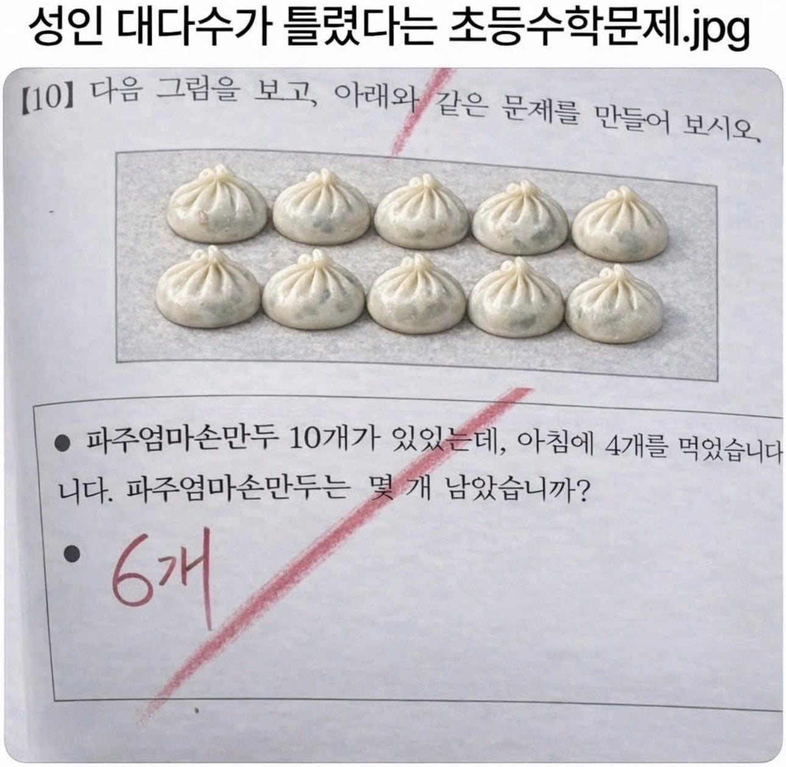

.... 뭔데 ?

.... 뭔데 ?
영희가 귤10개를 가지고 있는데 4개를 철수에게 나눠 줬습니다. 영희가 가진 귤의 개수는 몇개인가요?
정답 1개
영희와 철수의 사이에는 딸1명 아들2명이 있었고 각각 2개씩 먹었기때문
문제를 만들라 해서 저런 쉬운 문제도 못 만들어서 틀렸다는 문제를 만들었잖아!!
트러블 메이커
만두가 남냐? 답은 0개다. 그러면 당신이 먹은 만큼을 메꿔야 할 다른 가족의 몫을 만들기 위해 들어가야 할 재료의 양을 서술하시오.
잠만 잠만 ㅅㅂ 문제만드는거였네
여기 파주엄마손만두가 10개 있습니다, 그렇다면 파주엄마의 이름은 무엇일까요?
문제를 왜 만들어
파주엄마손만두 바이럴이네
문제를 만들라고 했지 누가 답을 말하래?
아 나도한번틀리고 문제다시보고 알음ㅋㅋㅋㅋ
씹주애미손맨두 이게 존나 어그로 끌리네
한국인들은 틀리는 문제네 ㅋㅋㅋ
ㅋㅋㅋㅋㅋㅋ문제를 만드는 문제의 예시를 문제로 푼다
문제야 문제~
먹는게 남는거니 나에게는 만두 4개어치의 영양분이 남았다
나 아는사람 강다니엘 닮은 이모가 다시보게되는게 다시 그때처럼 안닮게 엄마보면 느껴지는걸수도 있는거임?
엄마도?
글자 왜캐 깔끔함?
파주엄마김치손만두는 없냐?